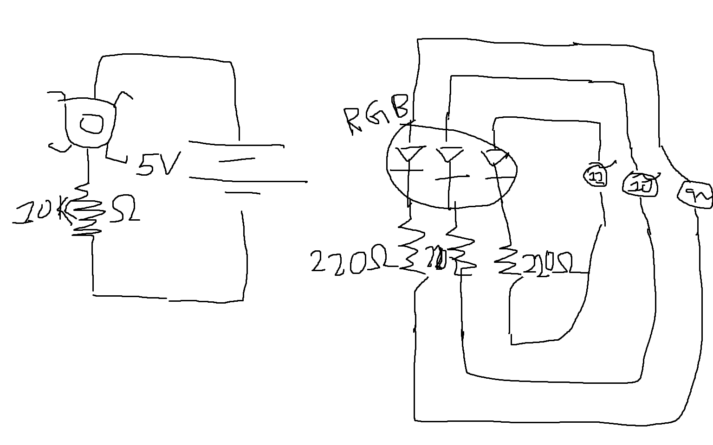
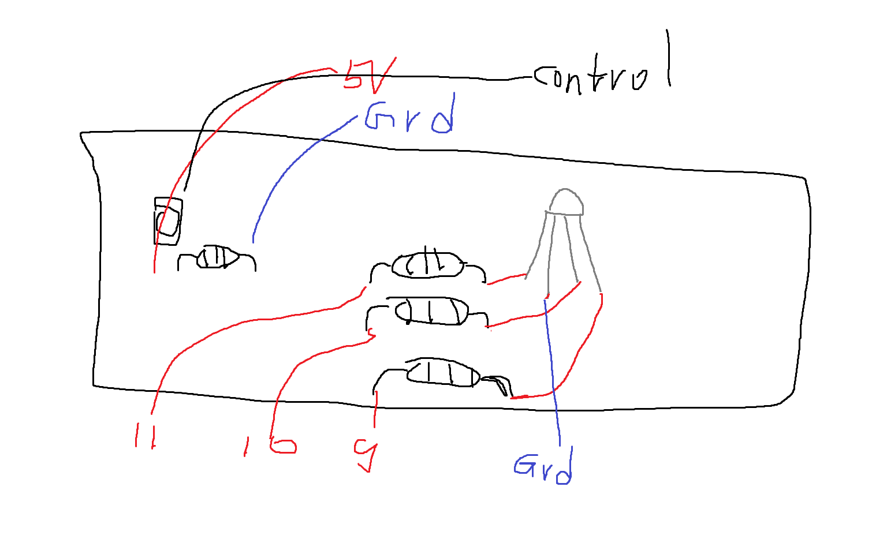
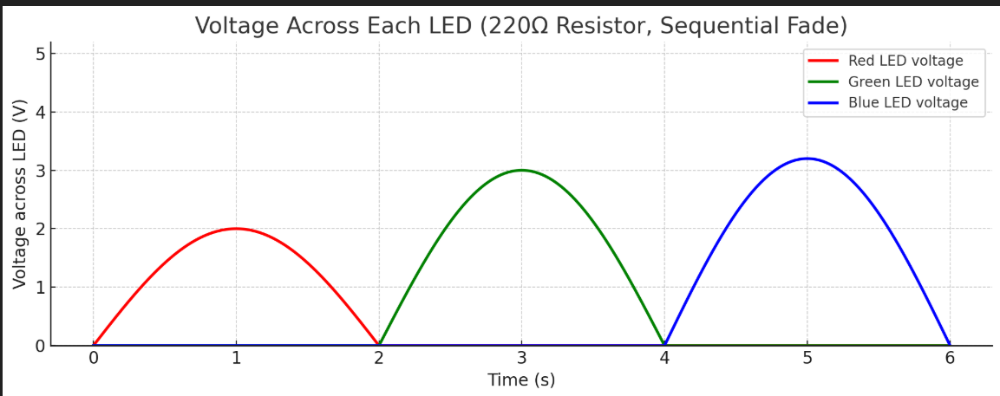

Here are the graphs representing this circuit
This represents my circuit
This represents my circuit schematic
This represents the voltage graph of the circuit over time for the LEDs
// constants won't change. They're used here to set pin numbers:
const int buttonPin = 2; // Pin that regulates button input and on change
// variables will change:
int buttonState = 0; // variable for reading the pushbutton status
// 0 is the LOW input state, while 1 is the HIGH input state.
void setup() {
// initialize the three LEDs pins as outputs:
// We use pints that are PWM so only 11, 10, and 9
for (int i = 11 ; i > 8 ; i--) {
pinMode(i, OUTPUT);
}
// initialize the button regulator pin as outputs
pinMode(buttonPin, INPUT);
}
void loop() {
// read the state of the pushbutton value:
buttonState = digitalRead(buttonPin);
// check if the pushbutton is pressed. If it is, the buttonState is HIGH:
// And the FADE sequence is activated and then displayed.
if (buttonState == HIGH) {
// We start from PIN Port 11 and go down to 9. Covering all three different colors
for (int i = 11 ; i > 8 ; i--) {
// We start from 0 and go through 255, covering all 8 bits analog write bit possible values and adjust our LED brightness.
// Start from dim to bright.
for (int j = 0 ; j < 256 ; j++) {
analogWrite(i, j); // AnalogWrite set the color to the current analog value.
delay(2); // With each change we delay by 2 ms so that human eye can perceive a change in state.
}
// Same thing but we start from the brightest and go to the dimmest.
for (int j = 255 ; j >= 0 ; j--) {
analogWrite(i, j);
delay(2); // Similar pattern as above.
}
}
} else {
// turn LED off if the button is not pressed and ensure nothing is run.
for (int i = 11 ; i > 8 ; i--) {
digitalWrite(i, LOW);
}
}
}
Here is the code for this project with commenting!
Here are some additional Questions: